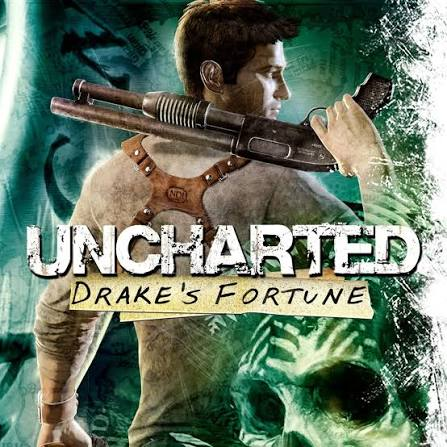
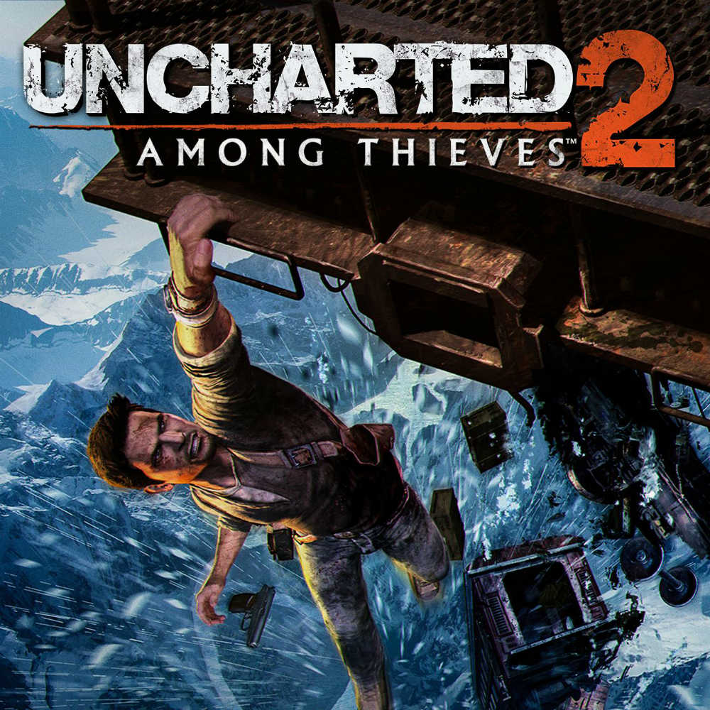

Uncharted: Drake's Fortune
2007
Good introduction game and the bond between nathan and sully is great its was short but the story was good. felt like a buddy movie.

My Rating
8 / 10
The Games
The first four main games follow Nathan Drake through different adventures around the world.
2007
Good introduction game and the bond between nathan and sully is great its was short but the story was good. felt like a buddy movie.

8 / 10
2009
The opening to this game was the best one in the series with sneaking into the museum and then the train sequence later on in the store was awesome too.

10 / 10
2011
Not much of a comment on this one, i think this one was the bad one in the series but it had its moments.
7 / 10
2016
This was my reintoduction to the series after years of not playing the second one and it was awesome. the story was good, the puzzles were good, and the locations were amazing
10 / 10